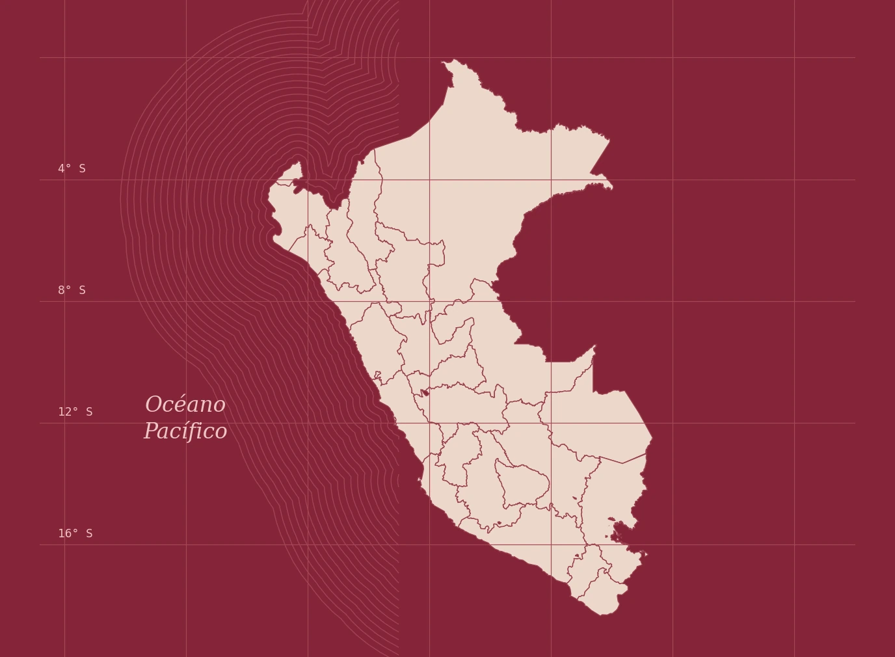

Investigación electoral
Extorsión y
campañas electorales
Tres miradas sobre la campaña en el Perú. Qué riesgos identificó el JNE, qué alertas involucraron a candidaturas y dónde se registraron las denuncias por extorsión.

Fuentes analizadas
Actualizado el- PREVENCOPEJurado Nacional de Elecciones
Riesgos electorales
Casos de riesgo en las elecciones generales y las ERM de 2026, con énfasis en organizaciones criminales y grupos subversivos.
- Alertas de la DNEECTJurado Nacional de Elecciones
Alertas contra actores políticos
Amenazas, ataques y extorsiones a candidaturas según el monitoreo de medios y los reportes de gestores del JNE.
- SIDPOLMinisterio del Interior / PNP
Denuncias por extorsión
Denuncias policiales de la población general desde 2019 hasta octubre de 2026, con detalle por departamento, provincia y distrito.